Midterm 02
Practice problems for topics on Midterm 02. See also the Sample Midterm 02 and its solutions.
Tags in this problem set:
Problem #174
Tags: hashing
Suppose \(T\) is a hash table of size 100 (that is, it has 100 bins). 300 elements are inserted into the hash table using a hash function that satisfies the uniform hashing assumption (that is, any element is equally-likely to hash into any bin). What is the expected number of elements in the first bin?
Solution
3
Problem #175
Tags: hashing
Suppose a hash table is constructed so that collisions are resolved through chaining. The hash table has \(10\) bins, and 100 items are inserted into the hash table.
True or False: it is possible for one of the bins to contain all 100 items.
Solution
True.
Chaining places no limit on how many items a bin can hold, so if the hash function sends every item to the same bin (for instance, a bad hash function like \(h(x) = 0\), or just unlucky keys that all collide), that bin will contain all 100 items. This is the worst case for a hash table, and it makes membership queries take \(\Theta(n)\) time.
Problem #176
Tags: hashing
Assume that a hash table is implemented using chaining to resolve collisions. The hash table stores \(n\) numbers.
Suppose a membership query is made for 42. True or False: more than one bin in the hash table may be checked with a linear search during the query.
Solution
False.
The query computes the hash of 42, which determines exactly one bin, and only that bin's chain is searched. If 42 is in the table at all, it must be in that bin, so there is no reason to look anywhere else.
Problem #177
Tags: hashing
Suppose a hash table is constructed using linked lists to store the data within each bin, and that collisions are resolved by chaining. What is the worst case time complexity of inserting a new element into the hash table? You may assume that the hash table will not need to be resized, and that evaluating the hash function takes \(\Theta(1)\) time.
Solution
\(\Theta(1)\). Inserting an item into a hash table takes two steps: first, we hash the item to find its bin -- this takes \(\Theta(1)\) time. Next, we actually insert the item into that bin. When we use chaining, we do this by appending the item to the linked list containing that bins elements. Appending to a linked list takes \(\Theta(1)\) time, and so overall this takes \(\Theta(1)\).
Problem #178
Tags: hashing
Suppose a hash table is constructed using linked lists to store the data within each bin, and that collisions are resolved by chaining. Suppose \(n\) elements have been inserted into the hash table. What is the worst case time complexity of querying whether an object exists within the hash table? You may assume that the hash table will not need to be resized, and that evaluating the hash function takes \(\Theta(1)\) time.
Solution
\(\Theta(n)\). Remember: in the worst case, all of the elements hashed to the same bin, and our query leads us to perform a linear search in that bin, taking linear time.
Problem #179
Tags: hashing
Suppose we are building a hash table to store numbers. Our hash table will have 1000 bins. True or false: \(f(x) = x \% 2\) is a good hash function. Here, \(x \% 2\) returns the remainder after dividing \(x\) by 2.
Solution
False. \(x \% 2\) is not a good hash function because the outcome is either 0 or 1. All the elements will be hashed into bin 0 or bin 1. This hash function doesn't utilize all bins evenly.
Problem #180
Tags: hashing
Suppose you insert 11 elements into a hash table with 20 bins. True or False: there must exist exactly 9 empty bins, no more, no less, since the number of elements being hashed is less than the number of bins in the hash table by nine.
Solution
False. The key word here is exactly. It is tempting to think that the all 11 elements were distributed evenly, with one per bin, leaving the other 9 bins all empty. But this isn't necessary -- all of the elements might have hashed to the same bin, for example.
Problem #181
Tags: hashing
Consider the code below:
def intersection(A, B):
common = set()
for x in A:
if x in B:
common.add(x)
return common
What is the expected time complexity of this code if A and B are Python sets (hash tables) with \(n\) elements each? State your answer as a function of \(n\) using asymptotic notation. You may assume that the hash function used is ``good'' in that it hashes evenly (that is, it satisfies the simple universal hashing assumption).
Solution
\(\Theta(n)\)
Problem #182
Tags: hashing
In the problem below, suppose arr is an array of \(n\) integers. What is the expected time complexity of the code below? Write your answer using asymptotic notation as a function of \(n\).
Remember: set is implemented using a hash table. You may assume that the hash table is large enough to store all of th numbers without needing to resize.
def find_duplicates(arr):
seen = set()
duplicates = set()
for num in arr:
if num in seen:
duplicates.add(num)
else:
seen.add(num)
return duplicates
Solution
\(\Theta(n)\)
Problem #183
Tags: hashing
What is the expected time complexity of the code shown below, assuming that numbers is a Python list? Express your answer as a function of \(n\) using asymptotic notation (e.g., \(\Theta(n)\)).
def foo(numbers):
"""Assume that `numbers` is a list containing n numbers."""
# counts is a Python dictionary, which is implemented using hash table
counts = {}
for x in numbers:
for y in numbers:
diff = abs(x - y)
if diff not in counts:
counts[diff] = 1
else:
counts[diff] = counts[diff] + 1
return counts
Solution
\(\Theta(n^2)\)
Problem #184
Tags: hashing
Suppose a hash table with \(n/2\) bins stores \(n\) elements, and suppose that when the next element is inserted into the hash table, a ``grow'' will be triggered. That is, the insertion will cause the hash table to resize to \(n\) bins containing the same \(n + 1\) elements, plus the newly-added element.
What will be the time complexity of this single insertion operation that causes the table to grow?
Solution
\(\Theta(n)\)
Problem #185
Tags: hashing
Suppose a hash table in constructed so that collisions are resolved through chaining. The hash table has a number of bins \(k\) that is \(\Theta(n)\), where \(n\) is the number of elements being stored in the hash table; that is, the hash table grows as more elements are inserted.
Suppose the hash function uses only the first \(k / 2\) bins of the hash table, but appears to hash items into these bins evenly.
What is the expected time complexity of a membership query on this hash table? State your answer in asymptotic notation in terms of the number of elements in the hash table, \(n\).
Solution
\(\Theta(1)\) Since only \(k/2\) bins are being used, the expected number of elements within each bin is \(n / (k/2) = 2n / k\). But since \(k = \Theta(n)\), this is just \(\Theta(1)\).
Problem #186
Tags: hashing
Suppose you will be receiving a stream of numbers, one by one, and you wish to keep track of the largest number seen so far. You will not need to perform membership queries. What should you do?
Solution
Don't store the numbers at all. To keep track of the maximum, we only need to remember the largest number seen so far; when a new number arrives, we compare it to the current maximum and update if it is larger. This takes \(\Theta(1)\) time per number and \(\Theta(1)\) memory, whereas every data structure would use \(\Theta(n)\) memory and at least as much time.
Problem #187
Tags: hashing, binary search trees
Suppose you need to keep track of a large dynamic collection of numbers. You will be performing n insertions, n deletions, and a very small number of queries for the maximum element in the collection. You will also be performing membership queries.
Which data structure should you use? You may assume that time complexity is the most important criterion.
Solution
A hash table. In a hash table, insertions and deletions take constant time (on average), while a query for the maximum element takes \(\Theta(n)\). Since we are running only a constant number of max queries, they take \(\Theta(n)\) time in total, and the \(n\) insertions and \(n\) deletions also take \(\Theta(n)\) time in total. In a balanced BST, all of these operations take \(\Theta(\log n)\), which means running n insertions and deletions will be \(\Theta(n \log n)\) -- slower than a hash table.
Problem #188
Tags: hashing, binary search trees
Suppose you need to keep track of a large dynamic collection of numbers. The three most common operations you will be performing are insertions, deletions, and queries for the maximum element in the collection. You may assume that the number of maximum queries you will be making is close to the number of insertions/deletions. You will also be performing membership queries.
Which data structure should you use? You may assume that time complexity is the most important criterion.
Solution
A self-balancing binary search tree. The key is that we're allowing deletions and max queries. If we delete the maximum, we'll need to find the next maximum upon our next query. In a hash table and unsorted array, this will take linear time. In a sorted array, finding the next max takes constant time -- but insertion and deletion potentially take linear time. In a balanced BST, all of these operations take \(\Theta(\log n)\) in the worst case -- this is because a BST essentially keeps nodes in sorted order.
Problem #189
Tags: graph theory
What type of graph would be best for representing a network of friends on social media, where friendships are mutual? (i.e, if person A is person B's friend, person B is also person A's friend)
Solution
An undirected graph. Since friendship is symmetric, an edge between A and B has no direction.
Problem #190
Tags: graph theory
Consider the graph below

What is the out degree of node \(0\)?
Solution
Answer: 3. Node 0 has edges to 2, 4, and 5.
Problem #191
Tags: graph theory
What is the out-degree of node \(u\) in the graph shown below?
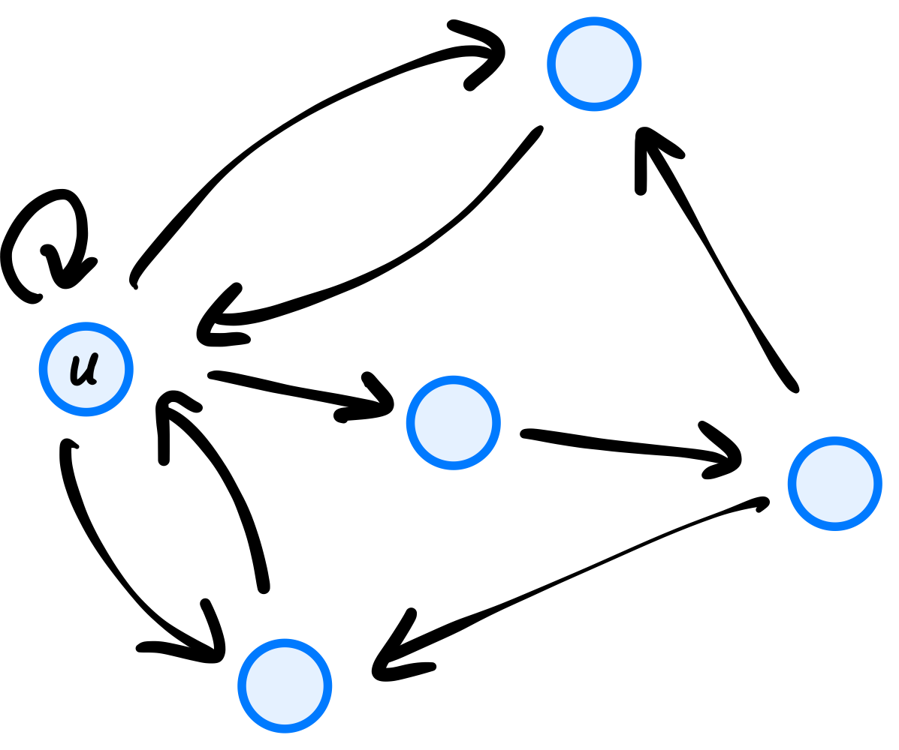
Solution
4
Problem #192
Tags: graph theory
Let \(V = \{a, b, c, d\}\) and \(E = \{(a,b), (a,a), (a,c), (d,b), (c,a)\}\) be the nodes and edges of a directed graph. How many predecessors does node \(b\) have?
Solution
2
Problem #193
Tags: graph theory
Suppose \(u\) is a node in a complete, undirected graph \(G = (V,E)\). What is the degree of \(u\)? Remember, an undirected graph is complete if it contains every possible edge.
Solution
\(|V| - 1\)
Problem #194
Tags: graph theory
Let \(G = (V, E)\) be a directed graph, and suppose \(u, v, w \in V\) are all nodes. True or False: if \(w\) is reachable from \(v\), and \(v\) is reachable from \(u\), then \(w\) is reachable from \(u\).
Solution
True.
There is a path from \(u\) to \(v\) and a path from \(v\) to \(w\). Following the first path and then the second gives a path from \(u\) to \(w\)(all of the edges point in the right direction, since each path follows its edges forward).
Problem #195
Tags: connected components, graph theory
Let \(C\) be a connected component in an undirected graph \(G\). Suppose \(u_1\) is a node in \(C\) and let \(u_2\) be a node that is reachable from \(u_1\). True or False: \(u_2\) must also be in the same connected component, \(C\).
Solution
True.
A connected component contains every node that is reachable from any of its nodes; it is a maximal set of nodes that can all reach one another. Since \(u_2\) is reachable from \(u_1\), it is in the same component as \(u_1\), which is \(C\).
Problem #196
Tags: graph theory
Let \(v = \{a, b, c, d, e, f, g\}\) and \(E = \{(a,g), (b,d), (d, e), (f, d)\}\). How many connected components does the undirected graph \(G =(V, E)\) have?
Solution
3
Problem #197
Tags: connected components
Consider the undirected graph \(G = (V, E)\) with
\(V = \{0, 1, 2, 3, 4, 5, 6, 7\}\)\(E = \{(0, 1), (3, 6), (1, 5), (2, 4), (3, 4)\}\)
What are the connected components of \(G\)?
Solution
\(\{\{0, 1, 5\}, \{2, 3, 4, 6\}, \{7\}\}\). The edges \((0,1)\) and \((1,5)\) connect 0, 1, and 5. The edges \((2,4)\), \((3,4)\), and \((3,6)\) connect 2, 3, 4, and 6. Node 7 has no edges, so it is a connected component by itself.
Problem #198
Tags: connected components
Let \(G = (V,E)\) be an undirected graph with:
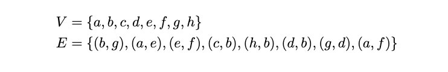
True or False: \(\{b, d, g\}\) is a connected component of this graph.
Solution
False. The connected components of this graph are \(\{a, e, f\}\) and \(\{b, c, d, g, h\}\).
Remember: a connected component has to contain all nodes reachable from any node in the component. While \(b\), \(d\), and \(g\) are all reachable from one another (and are ``connected''), they do not form a connected component because there are more nodes reachable from this group: namely, \(h\) and \(c\).
Problem #199
Tags: connected components
Let \(G = (V,E)\) be an undirected graph with:
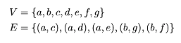
True or False: \(\{a, d, e\}\) is a connected component of this graph.
Solution
False.
Node \(c\) is also reachable from \(a\) via the edge \((a, c)\), so \(\{a, d, e\}\) isn't a maximal set of connected nodes. The connected component containing \(a\) is \(\{a, c, d, e\}\).
Problem #200
Tags: connected components, graph theory
Let \(G = (V, E)\) be an undirected graph, and suppose that \(u, v, \) and \(w\) are three nodes in \(V\). Suppose that \(u\) and \(v\) are in the same connected component, but \(u\) and \(w\) are not in the same connected component. True or False: it is possible that \(v\) and \(w\) are in the same connected component.
Solution
False.
If \(v\) and \(w\) were in the same connected component, then there would be a path from \(u\) to \(v\) and a path from \(v\) to \(w\), and putting them together gives a path from \(u\) to \(w\). That would put \(u\) and \(w\) in the same component, which contradicts what we were told. (In other words, the connected components split the nodes into non-overlapping groups.)
Problem #201
Tags: graph theory
An undirected graph has 5 nodes. What is the greatest number of edges it can have?
Solution
10
Problem #202
Tags: graph theory
You are told that a directed graph has 10 nodes. If the graph is fully connected with the exception of self loops (meaning, it has all possible edges except self loops) how many edges are there?
Solution
Answer: 90. Each of the 10 nodes has an edge to each of the other 9 nodes, giving \(10 \times 9 = 90\) edges. (Equivalently, \(10^2 = 100\) possible ordered pairs, minus the 10 self loops.)
Problem #203
Tags: graph theory
Let \(G\) be an undirected graph. Suppose that the degree of every node in the graph is greater than or equal to one. True or False: \(G\) must be connected.
Solution
False.
Take four nodes \(a, b, c, d\) with edges \((a, b)\) and \((c, d)\). Every node has degree 1, but the graph has two connected components, \(\{a, b\}\) and \(\{c, d\}\).
Problem #204
Tags: connected components, graph theory
Suppose \(G = (V, E)\) is an undirected graph. Let \(k\) be the number of connected components in \(G\). True or False: it is possible that \(k > |E|\).
Solution
True.
For example, a graph with 3 nodes and no edges has \(k = 3\) connected components (each node is its own component) but \(|E| = 0\).
Problem #205
Tags: graph theory
Let \(G = (V, E)\) be a directed graph with \(|V| > 1\). Suppose that every node in \(G\) is reachable from every other node. True or False: each node in the graph must have an out-degree of at least one and an in-degree of at least one.
Solution
True.
Pick any node \(u\), and let \(v\) be some other node (one exists because \(|V| > 1\)). Since \(v\) is reachable from \(u\), there is a path out of \(u\), and the first edge of that path leaves \(u\), so \(u\) has out-degree at least one. Similarly, since \(u\) is reachable from \(v\), the last edge of that path enters \(u\), so \(u\) has in-degree at least one.
Problem #206
Tags: graph theory
Let \(G = (V, E)\) be a connected, undirected graph with 16 nodes and 35 edges. What is the greatest possible number of edges that can be in a simple path within \(G\)?
Solution
15
Problem #207
Tags: connected components, graph theory
Suppose an undirected graph \(G = (V,E)\) has two connected components, \(C_1\) and \(C_2\). Suppose that \(|C_1| = 4\) and \(|C_2| = 3\). What is the largest that \(|E|\) can possibly be?
Solution
Answer: 9. To load a graph with the most edges, make each connected component "fully connected". The most edges we can put in a component with 4 nodes is \(4 * 3 / 2 = 6\), and the most we can put into a component with 3 nodes is \(3 * 2 / 2 = 3\). Therefore, we can put at most 9 edges in this graph.
Problem #208
Tags: connected components
Suppose an undirected graph has 3 connected components and 7 nodes. What is the maximum number of edges it can have?
Solution
10
Problem #209
Tags: graph theory
Suppose an undirected graph has 16 edges. What is the smallest number of nodes it can have?
Solution
7
Problem #210
Tags: graph theory
A directed graph has 10 edges. What is the smallest number of nodes it can have?
Solution
4
Problem #211
Tags: graph theory
Suppose a directed graph has 5 nodes and 3 edges. What is the greatest possible degree of any node in the graph?
Solution
Remember that nodes can have self loops, and that the degree of a node with only a self-loop is 2. So a node that has a self loop and two other edges leaving it has a degree of 4.
Problem #212
Tags: graph theory
Consider the graph below

How many simple paths are there from \(0\) to \(5\)?
Solution
Answer: 3. They are \(0 \to 5\), \(0 \to 4 \to 5\), and \(0 \to 2 \to 4 \to 5\).
Problem #213
Tags: graph theory
Consider the graph below
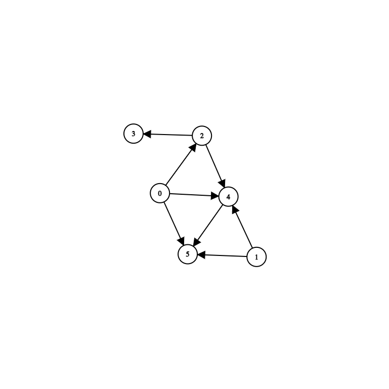
True or False: there are infinitely many paths from \(0\) to \(5\). (Here, "path" means any path, not necessarily a simple path.)
Solution
False. Paths may repeat nodes, so there would be infinitely many paths from 0 to 5 if some path from 0 to 5 could go around a cycle. But this graph has no cycles (every edge goes "forward"), so no path can repeat a node, and the only paths from 0 to 5 are the three simple paths \(0 \to 5\), \(0 \to 4 \to 5\), and \(0 \to 2 \to 4 \to 5\).
Problem #214
Tags: connected components
Let \(G\) be an undirected graph, and suppose \(u\) and \(v\) are two nodes belonging to the same connected component of \(G\), with \(v\) being a neighbor of \(u\). That is, the edge \((u, v)\) is in \(G\).
Let \(G'\) be the graph obtained from \(G\) by deleting the edge \((u, v)\). True or False: \(u\) and \(v\) must still be in the same connected component of the new graph, \(G'\).
Solution
False.
If the edge \((u, v)\) is the only path between them, deleting it disconnects them. For example, if \(G\) has just the two nodes \(u\) and \(v\) and the single edge \((u, v)\), then after deleting it, \(u\) and \(v\) are each in their own connected component. (They do stay connected if some other path between them exists, but that isn't guaranteed.)
Problem #215
Tags: connected components
Suppose that every node in an undirected graph with \(n\) nodes has degree 2.
True or False: \(G\) must have one connected component.
Solution
False.
Consider a graph with 6 nodes made up of two separate triangles. Every node has degree 2, but the graph has two connected components.
Problem #216
Tags: graph theory
Let \(G=(V,E)\) be an undirected graph with \(V=\{a,b,c,d,e\}\) and \(E=\{(a,b),(c,d),(e,a),(b,c),(e,d),(d,a)\}\).
True or False: it is possible to color nodes of \(G\) with red and blue such that there are no edges between nodes of the same color.
Solution
False.
The edges \((a, d)\), \((d, e)\), and \((e, a)\) form a triangle. Whichever colors we give \(a\), \(d\), and \(e\), two of these three nodes must share a color, and they are joined by an edge.
Problem #217
Tags: graph theory
Let \(G = (V, E)\) be a directed graph with the property that there is a node \(u\) in \(G\) such that every other node in \(G\) is reachable from \(u\).
Let \(H \) be the directed graph obtained from \(G\) by reversing the direction of every edge. True or False: there must be a node \(v\) in \(H\) such that every other node in \(H\) is reachable from \(v\).
Solution
False. Consider the graph \(a \leftarrow b \rightarrow c\). Every node is reachable from \(b\). Now flip the edges to get the graph: \(a \rightarrow b \leftarrow c\). There's no node from which every other node is reachable.
Problem #218
Tags: graph representations
Let \(A\) be the adjacency matrix representing a directed graph with $n$ nodes. What is the greatest possible sum of any row of \(A\)?
Solution
\(n\)
Problem #219
Tags: graph representations
Let \(A\) be the adjacency matrix representing a undirected graph with \(n\) nodes. What is the greatest possible sum of any row of \(A\)?
Solution
\(n - 1\). The sum of row \(i\) is the degree of node \(i\). Since an undirected graph has no self-loops, a node can be adjacent to at most the other \(n - 1\) nodes.
Problem #220
Tags: aggregate analysis, graph representations
Suppose a graph \(G = (V, E)\) is stored using an adjacency list representation in the variable adj_list. What is the time complexity of the below code?
for lst in adj_list:
for u in lst:
print(u)
Solution
\(\Theta(V + E)\)
Problem #221
Tags: aggregate analysis
Suppose a graph \(G = (V, E)\) is stored using an adjacency list representation in the variable adj_list. What is the time complexity of the below code?
for u, lst in enumerate(adj_list):
for v in lst:
print(u, v, "is an edge")
Solution
2nd option: \(\Theta(V + E)\)
Problem #222
Tags: aggregate analysis
Suppose the code below is run on a graph \(G = (V, E)\). What is its time complexity? You may assume that \(|E| \geq 1\).
for u in graph.nodes:
for v in graph.neighbors(u):
print(u, v)
Solution
\(\Theta(V + E)\)
Problem #223
Tags: graph representations
An isolated node in an undirected graph is a node that has no neighbors.
Suppose a graph \(G = (V, E)\) is represented using an adjacency matrix. What is the best possible worst-case time complexity of an efficient algorithm for computing the number of isolated nodes in the graph? State your answer as a function of \(|V|\) and \(|E|\) using asymptotic notation.
Solution
\(\Theta(V^2)\)
Problem #224
Tags: graph representations
An ``isolated node'' in a graph is a node that has no edges attached to it.
What is the worst case time complexity of an efficient algorithm that checks to see if a graph \(G = (V, E)\) has an isolated node? You should assume that the graph is represented as an adjacency list.
Solution
\(\Theta(V)\)
Problem #225
Tags: graph representations
Let \(A\) be the adjacency matrix of the graph shown below:
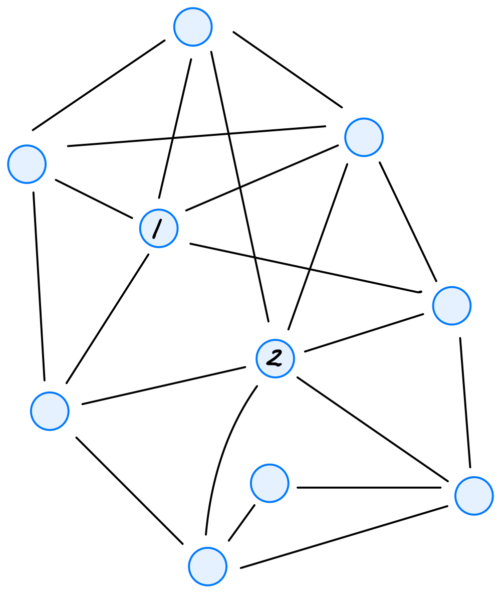
Let \(\vec{a}^{(1)}\) be the first row of \(A\) and \(\vec{a}^{(2)}\) be the second row of \(A\). What is \(\vec{a}^{(1)}\cdot\vec{a}^{(2)}\)? That is, what is the dot product between the first row of \(A\) and the second row of \(A\)? Your answer should be in the form of a number.
It may help to recall that the dot product between vectors \(\vec x = (x_1, \ldots, x_d)^T\) and \(\vec y = (y_1, \ldots, y_d)^T\) is equal to \(x_1 y_1 + x_2 y_2 + \ldots + x_d y_d\).
Solution
4
Problem #226
Tags: graph theory
The adjacency matrix of a directed graph with nodes \(u_1, \ldots, u_8\) is shown below:
True or False: there is a path from node \(u_1\) to node \(u_8\).
Solution
True.
Reading each row as the edges leaving that node, we can follow the path \(u_1 \to u_2 \to u_3 \to u_4 \to u_5 \to u_6 \to u_7 \to u_8\).
Problem #227
Tags: breadth first search
Suppose you run a BFS on the graph below, however, the BFS is modified so that any time a node is popped from the queue, the message Node popped!!! is printed to the screen.

How many times is the message printed?
Solution
Answer: 6. Every node reachable from the source is added to the queue exactly once and popped exactly once. This graph is connected, so all 6 nodes are popped, no matter which node the BFS starts at.
Problem #228
Tags: breadth first search
Suppose you are performing a BFS on the following graph, starting on node 0: In which of the following orders are the nodes visited, assuming that the BFS algorithm produces neighbors in numerical order?

Solution
0, 1, 3, 5, 4, 2. Visiting 0 adds 1 and 3 to the queue. Visiting 1 adds 5. Visiting 3 adds 4. Visiting 5 adds nothing new (4 is already pending). Visiting 4 adds 2. Finally 2 is visited.
Problem #229
Tags: breadth first search
Suppose a breadth first search is run on the graph below using node \(d\) as the source. Adopt the convention that a node's neighbors are produced in alphabetical order.

What is the node popped from the queue after node \(g\)?
Solution
\(e\). The nodes are popped in the order \(d, f, q, r, g, e, v\). Popping \(d\) adds \(f, q, r\); popping \(f\) adds \(g\); popping \(q\) adds \(e\); popping \(r\) adds \(v\). So the queue is then \(g, e, v\), and \(e\) comes right after \(g\).
Problem #230
Tags: breadth first search
Consider running a breadth-first search (BFS) on the graph shown below, using node \(s\) as the source and adopting the convention that neighbors are produced in ascending order by label.

How many nodes will be popped from the queue before node \(u_8\) is popped?
Solution
9
Problem #231
Tags: breadth first search
Define a circle graph with \(n\) nodes to be an undirected graph \(G = (V, E)\) with nodes \(u_1, u_2, \ldots, u_n\) and edges \((u_1, u_2), (u_2, u_3), \ldots, (u_{n-1}, u_n)\), along with one additional edge \((u_n, u_1)\) completing the cycle. An example of a circle graph with 6 nodes is shown below:

What is the time complexity of breath-first search when run on a circle graph with \(n\) nodes? State your answer as a function of \(n\) using asymptotic notation.
Solution
\(\Theta(n)\)
Problem #232
Tags: breadth first search
Suppose a ``2-chain'' graph with \(n\) nodes is constructed by taking \(n\) nodes labeled 1, 2, \(\ldots\), \(n\), and, for each node \(u\), making an edge to nodes \(u + 1\) and \(u + 2\)(if they are in the graph).
For example, such a graph with \(n = 7\) looks like:

Suppose BFS is run on a 2-chain graph with \(n\) nodes, using node 1 as the source. What is the time taken as a function of \(n\)? State your answer using asymptotic notation.
Solution
\(\Theta(n)\)
Problem #233
Tags: breadth first search
The code below is a modified version of BFS shown in class. This modification has a single addition: a print statement. A comment in the code indicates where the print statement is located.
def bfs(graph, source):
"""Start a BFS at `source`."""
status = {node: 'undiscovered' for node in graph.nodes}
status[source] = 'pending'
pending = deque([source])
while pending:
u = pending.popleft()
for v in graph.neighbors(u):
print("here!") # <--- this is the print statement
if status[v] == 'undiscovered':
status[v] = 'pending'
pending.append(v)
status[u] = 'visited'
Suppose this modified BFS is run on the following graph, starting at node \(a\).

How many times will "here!" be printed? Your answer should be an exact number.
Solution
10
Problem #234
Tags: breadth first search
Consider the following modification of BFS, with an added print statement:
from collections import deque
def modified_bfs(graph, source):
"""Start a BFS at `source`."""
status = {node: 'undiscovered' for node in graph.nodes}
status[source] = 'pending'
pending = deque([source])
while pending:
u = pending.popleft()
for v in graph.neighbors(u):
if v == 9:
print("Here!") # <-- this is the added print statement
if status[v] == 'undiscovered':
status[v] = 'pending'
pending.append(v)
status[u] = 'visited'
Consider running this algorithm on the following graph, starting at node \(1\):

How many times will "Here!" be printed?
Solution
2
Problem #235
Tags: breadth first search
Suppose a breadth-first search is performed on the following tree, starting at the root node \(s\):

What is the most number of nodes that can be in the queue at any one time?
Solution
8
Problem #236
Tags: breadth first search
Consider calling full_bfs on a directed graph, and recall that full_bfs will make calls to bfs until all nodes have been marked as visited.
True or False: the number of calls made to bfs depends on the order in which graph.nodes produces the graph's nodes. That is, if nodes are produced in a different order, the number of calls to bfs may be different.
Solution
True.
Consider the graph with the single edge \((a, b)\). If \(a\) is produced first, bfs(a) discovers \(b\) and only one call is needed. If \(b\) is produced first, bfs(b) cannot reach \(a\), so a second call is needed.
Problem #237
Tags: time complexity, breadth first search
Suppose an undirected graph with \(n\) nodes satisfies the property that every node has degree \(n/2\). What is the time complexity of running full BFS on this graph?
Solution
\(\Theta(n^2)\). Full BFS takes \(\Theta(V + E)\) time. The sum of the degrees is \(n \cdot n/2\), and each edge is counted twice in this sum, so there are \(n^2/4\) edges. So the time is \(\Theta(n + n^2/4) = \Theta(n^2)\).
Problem #238
Tags: breadth first search
Suppose a connected, undirected graph \(G\) has \(n\) nodes, half of which are ``red'' and half of which are ``blue''. Each red node shares an edge with \(\log_2 n\) blue nodes, and the only edges in the graph are between red and blue nodes.
What is the time complexity of BFS when run on \(G\)? Your answer should be in asymptotic notation and in terms of \(n\), in as simplest terms possible.
Solution
\(\Theta(n \log n)\)
Problem #239
Tags: graph theory
A ``hub node'' in a graph is a node that has an edge to all the other nodes in the graph.
What is the worst case time complexity of an efficient algorithm that checks to see if a graph \(G = (V,E)\) has a hub node? You should assume that the graph is represented as an adjacency list. State your answer in asymptotic notation and in terms of \(V\) and \(E\).
Note: in studying, you might have come across a problem in the practice bank about ``hub and spoke'' graphs. This question is related, but not the same!
Solution
\(\Theta(V)\)
Problem #240
Tags: connected components, breadth first search
Suppose you are running a full BFS on a graph. You are using the following code from lecture to run your full BFS, with some small modifications to include two new print statements:
from collections import deque
def bfs(graph, source, status=None):
"""Start a BFS at `source`."""
if status is None:
status = {node: 'undiscovered' for node in graph.nodes}
status[source] = 'pending'
pending = deque([source])
# while there are still pending nodes
while pending:
u = pending.popleft()
for v in graph.neighbors(u):
# explore edge (u, v)
print('foo') # <- this is new
if status[v] == 'undiscovered':
status[v] = 'pending'
# append to right
pending.append(v)
status[u] = 'visited'
def full_bfs(graph):
status = {node: 'undiscovered' for node in graph.nodes}
for node in graph.nodes:
if status[node] == 'undiscovered':
print("bar") # <- this is also new
bfs(graph, node, status)
After running the full BFS, you find that the word “foo” has been printed 2 times, and the word “bar” has been printed 5 times. Assuming that the graph has 1 edge (but an unknown number of nodes), which of the following is true about the graph in question?
Solution
There are 5 connected components, and it is undirected. "bar" is printed once each time full_bfs starts a new BFS, and in an undirected graph each new BFS starts in a new connected component, so there are 5 connected components. "foo" is printed once each time an edge is explored. In an undirected graph, each edge is explored twice (once from each endpoint), while in a directed graph it is explored only once. Since there is 1 edge and "foo" was printed 2 times, the graph is undirected.
Problem #241
Tags: breadth first search
Consider the code below, which is a modification of the BFS algorithm presented in lecture: there are two new lines, marked with comments.
from collections import deque
def modified_bfs(graph, source):
"""Start a BFS at `source`."""
status = {node: 'undiscovered' for node in graph.nodes}
status[source] = 'pending'
pending = deque([source])
while pending:
u = pending.popleft()
for v in graph.neighbors(u):
for node in graph.nodes: # < -- this is the modification
print(status[node]) # < -- this is the modification
if status[v] == 'undiscovered':
status[v] = 'pending'
pending.append(v)
status[u] = 'visited'
What is the time complexity of this algorithm, in terms of \(|V|\) and \(|E|\)? You may assume the graph is undirected and connected, so that all nodes are reachable from the source.
Solution
Because the graph is connected, \(|E| \geq |V| - 1\), and so \(\Theta(VE)\) and \(\Theta(VE + V)\) are equivalent. Only \(\Theta(VE + V)\) is an option so \(\Theta(VE + V)\) is the correct answer.
Problem #242
Tags: time complexity, aggregate analysis, breadth first search
Consider the following modification of BFS, where there are two new lines of code. What is the time complexity in terms of \(|V|\) and \(|E|\)?
from collections import deque
def foo(graph):
status = {node: 'undiscovered' for node in graph.nodes}
for u in graph.nodes:
if status[u] == 'undiscovered':
bar(graph, u, status)
def bar(graph, source, status):
status[source] = 'pending'
pending = deque([source])
# while there are still pending nodes
while pending:
u = pending.popleft()
for v in graph.neighbors(u):
# explore edge (u,v)
if status[v] == 'undiscovered':
status[v] = 'pending'
pending.append(v)
for v in graph.nodes:
print(v)
status[u] = 'visited'
Solution
\(\Theta(V + VE)\). Without the two new lines, this is a full BFS, which takes \(\Theta(V + E)\) time. The new inner loop runs once each time an edge is explored, and each time it takes \(\Theta(V)\) time. By an aggregate analysis, edges are explored \(\Theta(E)\) times in total, so the new lines add \(\Theta(VE)\) time. The total is \(\Theta(V + E + VE) = \Theta(V + VE)\). (We can't drop the \(V\) term: when there are no edges, the code still takes \(\Theta(V)\) time.)
Problem #243
Tags: aggregate analysis, breadth first search
Consider the code below, which is a modification of the code for bfs given in lecture:
from collections import deque
def modified_full_bfs(graph):
status = {node: 'undiscovered' for node in graph.nodes}
for node in graph.nodes:
if status[node] == 'undiscovered':
modified_bfs(graph, node, status)
def modified_bfs(graph, source, status=None):
"""Start a BFS at `source`."""
if status is None:
status = {node: 'undiscovered' for node in graph.nodes}
status[source] = 'pending'
pending = deque([source])
# while there are still pending nodes
while pending:
u = pending.popleft()
for v in graph.neighbors(u):
# explore edge (u,v)
if status[v] == 'undiscovered':
status[v] = 'pending'
# append to right
pending.append(v)
for z in graph.nodes: # <----- new line!
print(z, status[z]) # <----- new line!
status[u] = 'visited'
Notice the two new lines; these lines print all node statuses any time that an undiscovered node has been found.
What is the time complexity of this modified modified_full_bfs? State your answer in asymptotic notation in terms of the number of nodes, \(|V|\), and the number of edges, \(|E|\). You may assume that the graph is represented using an adjacency list, and that it is connected.
Solution
\(\Theta(V^2)\).
First, the newly-added code (the for z in graph.nodes loop), takes \(\Theta(V)\) time each time the loop is encountered. The crux is: how many times is that loop encountered?
This loop is encountered every time we add a node to the queue (except for the root node, which we add to the queue right at the beginning of BFS). Since this is a connected graph, each node will get added to the pending queue exactly once, meaning that this new code is encountered exactly\(V-1\) times (the \(-1\) is subtracting the root node; the loop isn't encountered when we change it to pending).
Since the new code takes \(\Theta(V)\) time each time it's encountered, and since it's encountered \(\Theta(V)\) times, the total time complexity of the loop is \(\Theta(V^2)\).
You might wonder why the time complexity isn't \(\Theta(VE)\), since the new code is within the loop that ``explores'' each edge in the graph, and we know that it makes a total of \(2|E|\) iterations when the graph is undirected. This is true, but recognize that the new code only executes when the if-statement before it is True, and this will happen on only a subset of the \(2|E|\) iterations. In fact, it will happen exactly \(|V|-1\) times, as we argued above.
Problem #244
Tags: aggregate analysis
A ``hub and spoke'' graph with \(n\) nodes consists of a single ``hub'' node \(h\) along with \(n - 1\) ``spoke'' nodes, \(u_1, \ldots, u_{n-1}\) and \(n - 1\) edges from the hub node \(h\) to each of the spoke nodes. For example, a ``hub and spoke'' graph with 8 nodes looks like the below:
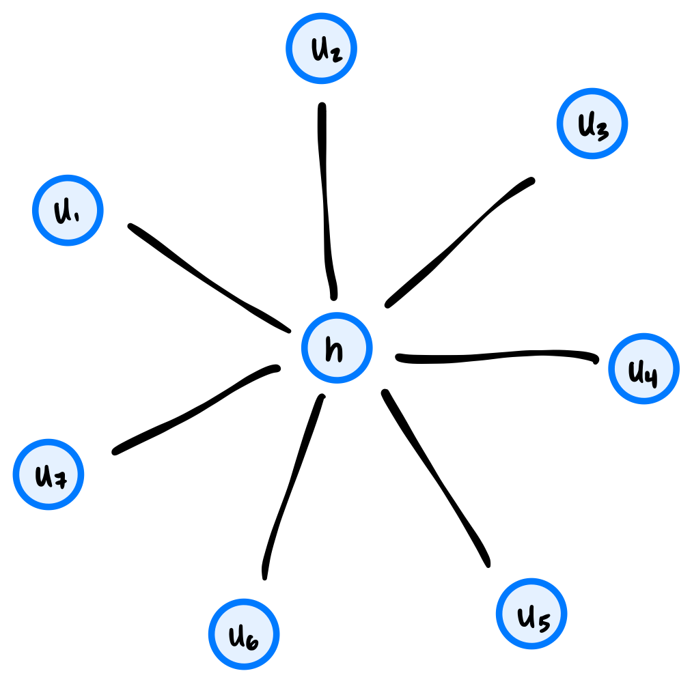
What is the worst case time complexity of an optimal algorithm which takes as input an arbitrary graph \(G = (V, E)\) and determines if it is a ``hub and spoke'' graph? You may assume that the graph is represented as an adjacency list and that the total number of edges in the graph can be retrieved in constant time.
Solution
\(\Theta(1)\) Here's the algorithm. First, check that the number of edges is \(|V| - 1\). If not, it's not a ``hub and spoke'' graph. This takes constant time, by the assumption that the total number of edges can be retrieved in constant time.
Next, take an arbitrary node and compute its degree (in \(\Theta(1)\) time), since the graph is represented as an adjacency list). If the degree is \(n - 1\), then the graph is a ``hub and spoke'' graph, and this is the hub.
If the degree is not \(n - 1\), but instead 1, this node might be a spoke. Check the degree of its neighbor as described above to see if its a hub.
If you see a degree that's neither 1 nor \(n - 1\), then the graph is not a ``hub and spoke'' graph.
Problem #245
Tags: breadth first search
Suppose a breadth first search (BFS) is performed on the graph shown below using node \(a\) as the source. Which node will be the BFS predecessor of node \(h\) when the search is complete? You should use the convention that neighbors are produced in alphabetical order.

Solution
\(d\)
Problem #246
Tags: breadth first search
Suppose a BFS is run on the graph below using node 1 as the source node. Which node will be the BFS predecessor of node 8? You should use the convention that neighbors are produced in ascending order by label.

Solution
5
Problem #247
Tags: breadth first search
Suppose a BFS is run on the graph below using node 1 as the source node. Which node will be the BFS predecessor of node 9? You should use the convention that neighbors are produced in ascending order by label.

Solution
5
Problem #248
Tags: breadth first search
Suppose a breadth first search (BFS) is run on the graph shown below using node \(u_4\) as the source and the convention that graph.neighbors produces nodes in ascending order by label. What will be the predecessor of \(u_6\) in the BFS?

Solution
\(u_2\)
Problem #249
Tags: graph theory
An undirected graph \(G = (V, E)\) has 23 nodes and 2 connected components. What is the smallest number of edges it can have?
Solution
21
Problem #250
Tags: connected components, graph theory
An undirected graph with 20 nodes and 30 edges has three connected components: \(A\), \(B\), and \(C\). Connected component \(A\) has 7 nodes. What is the smallest number of edges it can have?
Solution
6
Problem #251
Tags: connected components, breadth first search, shortest paths
Suppose you are about to run a BFS on a graph whose exact edge structure you do not know. However, you do know that the graph is undirected, has 8 nodes, and has 2 connected components.
You have picked a node to start on and are about to run a BFS to find shortest path distances. What is the greatest shortest path distance between the starting node and any other node that could possibly be found in such a graph? Hint: consider how large a connected component could possibly be.
Solution
Answer: 6. The largest a connected component can be is 7 nodes (the other component must have at least one node). If those 7 nodes form a path and we start at one end, the node at the other end is at distance 6.
Problem #252
Tags: breadth first search
Suppose a breadth first search (BFS) is run on a graph \(G = (V, E)\), and that node \(u\) is distance 5 from the source while node \(v\) is distance 3 from the source. True or False: it is possible that at some point during the BFS, both \(u\) and \(v\) are in the pending queue at the same time.
Solution
False.
At any moment, the nodes in the BFS queue are all at distance \(d\) or \(d + 1\) from the source, for some \(d\). So two nodes whose distances differ by 2 can never be in the queue together.
Problem #253
Tags: breadth first search
Suppose a breadth first search (BFS) is run on a graph \(G = (V, E)\), and that node \(u\) is distance 6 from the source while node \(v\) is distance 7 from the source. True or False: it is possible that at some point during the BFS, both \(u\) and \(v\) are in the pending queue at the same time.
Solution
True. Suppose another node \(w\) is also at distance 6 and is a neighbor of \(v\). If \(w\) is popped from the queue before \(u\), then \(v\) is added to the queue while \(u\) is still waiting in it.
Problem #254
Tags: breadth first search
Suppose a breadth first search (BFS) is run on a graph \(G = (V, E)\), and that node \(u\) is the only node which is distance 6 from the source while node \(v\) is distance 7 from the source. True or False: it is possible that at some point during the BFS, both \(u\) and \(v\) are in the pending queue at the same time.
Solution
False. A node at distance 7 must be discovered while BFS is exploring the neighbors of a node at distance 6, and the only such node is \(u\). But \(u\) is removed from the queue before its neighbors are explored, so by the time \(v\) is added to the queue, \(u\) is no longer in it.
Problem #255
Tags: breadth first search, shortest paths
Suppose that a breadth-first search on an undirected graph \(G\) is paused and the queue is printed. Suppose that every node in the queue is either distance 5 from the source, or distance 6. At this moment, node \(u\) is undiscovered.
True or False: it is possible that node \(u\) is distance 4 from the source.
Solution
False.
BFS pops nodes in order of distance, so if every node in the queue is at distance 5 or more, every node at distance 4 has already been popped. That means it was discovered earlier, so it can't be undiscovered now.
Problem #256
Tags: breadth first search
Suppose a breadth first search on an undirected, connected graph is paused at a particular moment in time and the node statuses are printed. Suppose it is found that all nodes which are distance 6 from the source are marked ``visited''.
True or False: it is possible that there is a node, distance 7 from the source, whose status is ``undiscovered''.
Solution
False.
Every node at distance 7 has a neighbor at distance 6 (the node just before it on a shortest path). When that neighbor was marked visited, all of its neighbors had already been discovered, so the node at distance 7 must have been discovered too.
Problem #257
Tags: breadth first search
Suppose a breadth-first search (BFS) is performed in order to calculate a dictionary of shortest path distances, dist, from a source node \(s\) to all nodes reachable from \(s\) in an undirected graph \(G = (V, E)\).
Suppose node \(u\) is a node in \(G\), and \(v_1\) and \(v_2\) are two neighbors of node \(u\). Assume that \(u\) is reachable from \(s\).
Part 1)
What is the largest that \(|\)dist[v_2] - dist[v_1]\(|\) can be?
Solution
2
Part 2)
What is the smallest that \(|\)dist[v_2] - dist[v_1]\(|\) can be?
Solution
0
Problem #258
Tags: shortest path, graph theory
Suppose an undirected, connected graph has \(n\) nodes, half of which are colored red and the other half are colored blue. Each red node is neighbors with \(n/4\) blue nodes, and each blue node is neighbors with \(n/4\) red nodes. There are no edges between nodes of the same color.
What is the time complexity of computing a shortest path from a given red node to all other red nodes using BFS?
Solution
\(\Theta(n^2)\)
Problem #259
Tags: breadth first search, shortest paths
Consider the following problem: you're given an unweighted graph \(G\), a source node \(u\), a destination node \(v\), and an "intermediate" node \(x\). Your goal is to find a shortest path from \(u\) to \(v\) that passes through \(x\).
Your friend proposes the following algorithm: run a BFS starting at node \(u\), then terminate it when it reaches node \(x\). Then start a BFS at node \(x\), and terminate it when it reaches node \(v\).
Does this algorithm work?
Solution
Yes. Any path from \(u\) to \(v\) through \(x\) consists of a path from \(u\) to \(x\) followed by a path from \(x\) to \(v\), so its length is at least the \(u\)-to-\(x\) distance plus the \(x\)-to-\(v\) distance. The first BFS finds a shortest path from \(u\) to \(x\) and the second finds a shortest path from \(x\) to \(v\); joining them gives a path achieving this minimum.
Problem #260
Tags: shortest paths
Let \(G\) be an undirected graph, and let \(u, v,\) and \(z\) be three nodes in the graph. Consider the problem of finding a shortest path from \(u\) to \(v\) which passes through node \(z\).
True or False: a shortest path from \(u\) to \(v\) passing through \(z\) may include node \(u\) twice.
Solution
True.
Consider the "chain" graph A - B - C - D - E. The shortest path from C to E that passes through B is C - B - C - D - E. It passes through C twice.
Problem #261
Tags: breadth first search
The table below shows the number of nodes in a graph \(G\) which are distance 0 from node \(s\), distance 1 from node \(s\), distance 2, etc.:

Suppose a BFS is performed on this graph with node \(s\) as the starting node. What is the largest number of nodes that could possibly be in the queue at any one time?
Solution
Remember that the queue can only simultaneously contain nodes at two different distances (it can't contain nodes at distance 1, distance 2, and distance 3 at the same time, but it can contain nodes at distance 1 and distance 2 at the same time).
The largest number of nodes that could possibly be in the queue at any one time is when we have (almost) all of the nodes from the first distance, and all of the nodes from the second distance.
In this graph, let \(u\) be a neighbor of the source, and suppose it has an edge with all nodes that are distance 2 from the source. If \(u\) is the first node popped from the queue (after the source), then once its neighbors are added to the queue, the queue will contain all of the nodes at distance 1 except for \(u\)(for 6 nodes in total), and all of the nodes at distance 2 (for 3 nodes in total). This gives us a total of 9 nodes in the queue.
Problem #262
Tags: depth first search, trees
What is the time complexity of depth first search (DFS) when run on a tree with \(n\) nodes?
Solution
\(\Theta(n)\)
Problem #263
Tags: depth first search, aggregate analysis
Suppose an undirected graph \(G = (V, E)\) is a tree with 33 edges. Suppose a node \(s\) is used as the source of a depth-first search.
Including the root call of dfs on node \(s\), how many calls to dfs will be made?
Solution
34
Problem #264
Tags: depth first search, breadth first search
Let \(G = (V, E)\) be an undirected tree.
Suppose breadth-first search (BFS) and depth-first search (DFS) are each run on the graph using the same source node. True or False: for any node \(u\) in the graph, the BFS predecessor of \(u\) and the DFS predecessor of \(u\) must be the same.
Solution
True.
In a tree there is exactly one simple path from the source to \(u\). BFS and DFS both find a path from the source to \(u\), and it has to be this one, so both predecessors are the node right before \(u\) on it.
Problem #265
Tags: depth first search, breadth first search
Suppose both BFS and DFS are run on the same graph \(G = (V, E)\) using the same source node. Assume that \(G\) is a tree. Consider a particular node \(u\) in the graph. True or False: the BFS predecessor found for \(u\) and the DFS predecessor found for \(u\) must be the same.
Solution
True.
In a tree there is exactly one simple path from the source to \(u\). BFS and DFS both find a path from the source to \(u\), and it has to be this one, so both predecessors are the node right before \(u\) on it.
Problem #266
Tags: depth first search, connected components, breadth first search
We saw in lecture that both full BFS and DFS produce trees when run on connected graphs, and forests when run on disconnected graphs. Suppose a full BFS and a full DFS are run on an undirected graph with three connected components. True or False: the number of trees in the BFS forest will equal to number of trees in the DFS forest.
Solution
True. Both full BFS and full DFS start a new search once for each connected component (each search discovers exactly the nodes in the source's component), so each produces one tree per connected component: three trees in both forests.
Problem #267
Tags: topological sorting
Consider the graph \(G = (V, E)\) with \(V = \{a, b, c\}\) and \(E = \{(a, b)\}\).
How many valid topological sorts of this graph are there?
Solution
3
Problem #269
Tags: topological sorting
Let \(G = (V,E)\) be the directed graph with \(V = \{a, b, c, d, e\}\) and \(E = \{(a, b), (a, c), (a, d), (b, e), (c, e), (d, e)\}\). How many valid topological sorts of $V$ are there?
Solution
6
Problem #270
Tags: topological sorting
Find a topological sort of the graph shown below:
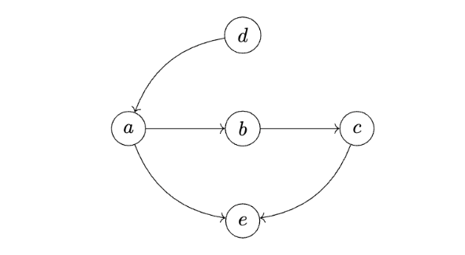
Solution
d a b c e
Problem #271
Tags: depth first search
Suppose a depth first search (DFS) is run on the graph shown below using node \(u_4\) as the source and the convention that graph.neighbors produces nodes in ascending order by label. What will be the predecessor of \(u_6\) in the DFS?

Solution
\(u_5\). DFS starts at \(u_4\), looks at the neighbors, and sees \(u_2\) is undiscovered, so it makes a recursive call dfs(u_2). At \(u_2\), it sees that \(u_1\) is undiscovered, and calls dfs(u_1). At \(u_1\), there's nothing to do, so it's marked as visited and the recursion unrolls back to the call on dfs(u_2). We then look at the next neighbor of \(u_2\), which is \(u_3\). We make a call to dfs(u_3), which looks at its neighbors and sees \(u_5\). We make a call to dfs(u_5), and during this call we discover \(u_6\), meaning that \(u_5\) is the DFS predecessor of \(u_6\).
Problem #272
Tags: depth first search, start and finish times
Suppose a depth first search is run on the graph shown below using node \(u_4\) as the source, and adopt the convention that graph.neighbors produces nodes in ascending order of label. Which node will have the smallest finish time?

Solution
\(u_1\)
Problem #273
Tags: depth first search, start and finish times
Suppose a depth first search is run on the graph shown below using node \(u_4\) as the source, and adopt the convention that graph.neighbors produces nodes in ascending order of label. What will be the start time of node \(u_7\)?

Solution
12
Problem #274
Tags: depth first search
Suppose a depth first search is run on the graph below using node \(d\) as the source, and using the convention that a node's neighbors are produced in alphabetical order.

What is the predecessor of node \(v\) in the DFS search tree?
Solution
\(r\). From \(d\), DFS first visits \(f\), then (from \(f\)) \(g\), then (from \(g\)) \(r\), and then (from \(r\)) \(v\). So \(v\) is discovered from \(r\).
Problem #275
Tags: depth first search, start and finish times
Suppose a depth first search is run on the graph below in order to find start and finish times using node \(d\) as the source.

Adopt the convention that the first start time is 1, and, as always, that neighbors are produced in ascending order by label. What will be the start and finish times of node \(r\)?
Solution
Start time 4, finish time 7. DFS starts \(d\) at 1, \(f\) at 2, \(g\) at 3, and \(r\) at 4. From \(r\) it starts \(v\) at 5, which finishes at 6, and then \(r\) finishes at 7.
Problem #276
Tags: depth first search
Suppose a DFS is run on the graph shown below using node 11 as the source.

What will be the DFS predecessor of node 3 in the search? Use the convention that a node's neighbors are produced in ascending order by label.
Solution
1
Problem #277
Tags: depth first search, start and finish times
Suppose a DFS is run on the graph shown below using node 11 as the source. Use the convention that a node's neighbors are produced in ascending order by label.

Part 1)
What will be the start time of node 2? Use the convention that the start time of the source is 1.
Solution
4
Part 2)
What will be the finish time of node 10?
Solution
11
Problem #278
Tags: depth first search
Suppose a depth first search (DFS) is run on the graph below, starting at node \(a\). Start and finish times are calculated using the convention that the start time of node \(a\) is 1.
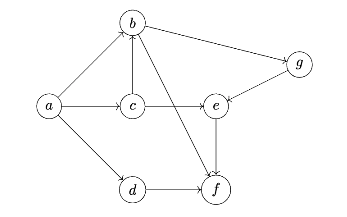
What will be the finish time of node \(c\)? Assume the convention that a node's neighbors are produced in alphabetical order.
Solution
11
Problem #279
Tags: depth first search
Suppose a depth first search (DFS) is run on the graph below, starting at node \(a\). Start and finish times are calculated using the convention that the start time of node \(a\) is 1.
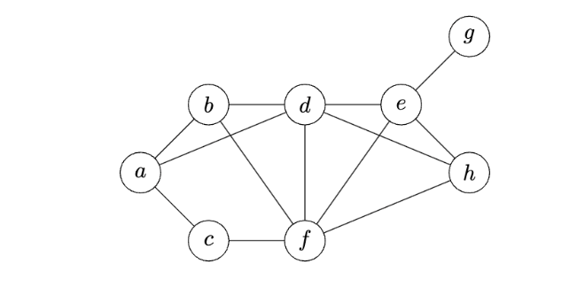
What will be the finish time of node \(e\)? Assume the convention that a node's neighbors are produced in alphabetical order.
Solution
13
Problem #280
Tags: depth first search, start and finish times
Suppose a depth-first search (DFS) is run on the graph shown below using node \(s\) as the source and adopting the convention that a node's neighbors are produced in ascending order of their label.

Part 1)
What will be the start time of node \(u_7\)?
Solution
8
Part 2)
What will be the finish time of node \(u_7\)?
Solution
9
Part 3)
Which node will be the DFS predecessor of node \(u_7\)?
Solution
\(u_6\)
Problem #281
Tags: depth first search
A modification of the dfs function from lecture is shown below. It is the same as the original dfs function, except that it has an added print statement.
def dfs(graph, u, status=None):
"""Start a DFS at `u`."""
# initialize status if it was not passed
if status is None:
status = {node: 'undiscovered' for node in graph.nodes}
status[u] = 'pending'
for v in graph.neighbors(u):
if status[v] == 'undiscovered':
print("Hello!")
dfs(graph, v, status)
status[u] = 'visited'
Consider running this algorithm on the following graph, starting at node \(a\):
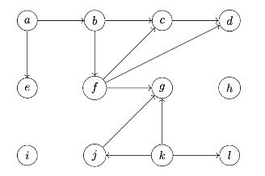
How many times will "Hello!" be printed? Note that this is not a full DFS, and that not all nodes are reachable from \(a\).
Solution
6
Problem #282
Tags: depth first search
A modification of the dfs function from lecture is shown below. It is the same as the original dfs function, except that it has an added print statement.
def dfs(graph, u, status=None):
"""Start a DFS at `u`."""
# initialize status if it was not passed
if status is None:
status = {node: 'undiscovered' for node in graph.nodes}
status[u] = 'pending'
for v in graph.neighbors(u):
print("Hello!")
if status[v] == 'undiscovered':
dfs(graph, v, status)
status[u] = 'visited'
Consider running this algorithm on the following graph, starting at node \(a\):
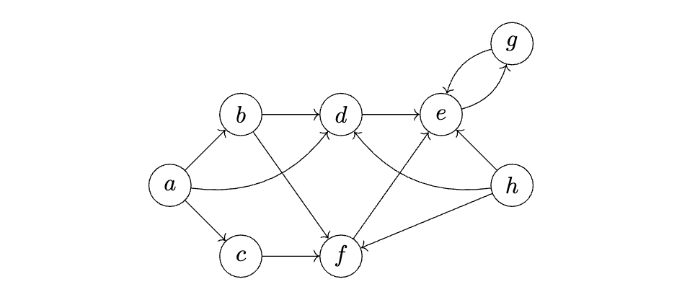
How many times will "Hello!" be printed? Note that this is not a full DFS, and that not all nodes are reachable from \(a\).
Solution
10
Problem #283
Tags: depth first search, aggregate analysis
Consider the code shown below. It shows DFS as seen in lecture, with one modification: a print statement in the for-loop.
def dfs(graph, u, status=None):
"""Start a DFS at `u`."""
# initialize status if it was not passed
if status is None:
status = {node: 'undiscovered' for node in graph.nodes}
status[u] = 'pending'
for v in graph.neighbors(u):
print("Hello!")
if status[v] == 'undiscovered':
dfs(graph, v, status)
status[u] = 'visited'
How many times will "Hello!" be printed if dfs is run on the graph below using node \(u\) as the source? Note that dfs will not be restarted if the first call does not explore the whole graph.
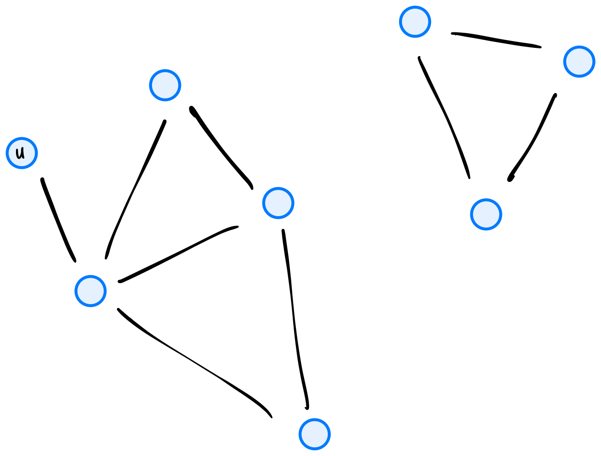
Solution
12
Problem #284
Tags: depth first search
Suppose we define a forward-looking graph with \(n\) nodes to be the directed graph \(G = (V, E)\) with nodes \(u_1, \ldots, u_n\) and the edge \((u_i, u_j)\) if and only if \(i < j\). An example of such a graph with 4 nodes is shown below.
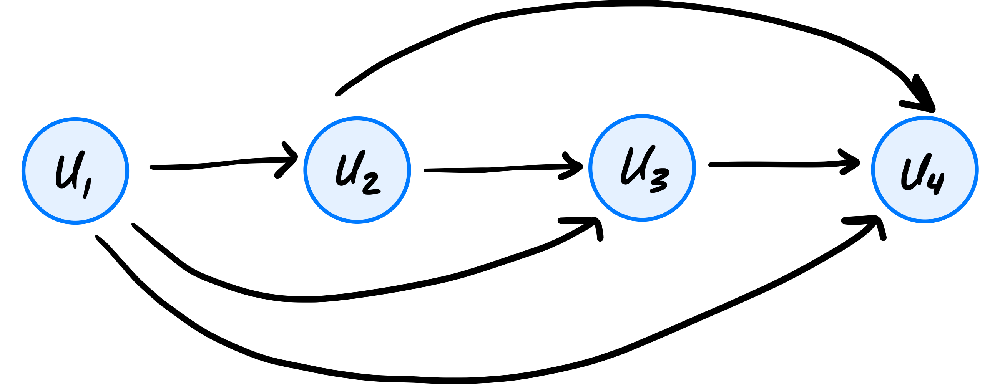
What is the time complexity of depth-first search when run on a forward-looking graph with \(n\) nodes, using node \(u_1\) as the source? State your answer as a function of \(n\) using asymptotic notation.
Solution
\(\Theta(n^2)\)
Problem #285
Tags: depth first search, start and finish times
Suppose you run DFS on a graph in which all nodes are reachable from the source node. True or false: the source node will be marked as visited last, only if the graph is undirected.
Solution
False. The source is marked as visited last in both directed and undirected graphs. Every other node is reachable from the source, so each is discovered and finished during the recursive calls made by the call on the source, which finishes only after all of them have.
Problem #286
Tags: depth first search
Suppose a DFS is run on a directed graph. Let \(u\) and \(v\) be two nodes in the graph, and assume that the edge \((u, v)\) exists. True or False: it is possible that, at some moment in time, \(u\) is marked as ``visited'' while \(v\) is marked as ``undiscovered''.
Solution
False.
Before dfs(u) marks \(u\) as visited, it loops over all of \(u\)'s successors and calls dfs on any that are undiscovered. So by the time \(u\) is visited, \(v\) has been discovered (it is pending or visited).
Problem #287
Tags: depth first search
Suppose a depth first search is run on a directed graph. True or False: it is possible that, at any moment in time, there is a node marked as visited which has a neighbor (successor) that is marked as pending.
Solution
True.
Take the graph with edges \((a, b)\) and \((b, a)\) and start the DFS at \(a\). While \(a\) is pending, dfs(b) is called. It sees that \(a\) is already pending and then finishes, so \(b\) is visited while its successor \(a\) is still pending.
Problem #288
Tags: depth first search
Suppose that a depth first search is being performed on an undirected graph, and when dfs is called on a node \(u\), the statuses of all of its neighbors are printed. True or False: it is possible that one of the neighbors is marked as ``visited''.
Solution
False.
dfs(u) is only called when \(u\) is undiscovered. If a neighbor \(w\) were already visited, then dfs(w) would have looped over its neighbors, including \(u\), before finishing, so \(u\) would already have been discovered.
Problem #289
Tags: depth first search, start and finish times
Suppose a depth first search (DFS) is run on a connected undirected graph, and there is a node \(u\) which has only one neighbor. True or False: the finish time of node \(u\) will be equal to its start time plus 3.
Solution
False. If \(u\) is not the source, its only neighbor is the node it was discovered from, which is already pending. So DFS finds nothing new to visit from \(u\), and \(u\)'s finish time is its start time plus 1. (If \(u\) is the source, its finish time is its start time plus \(2(|V| - 1) + 1\), which equals its start time plus 3 only when the graph has exactly two nodes.)
Problem #290
Tags: depth first search, start and finish times
In a DFS on an undirected graph \(G\), the start time of node \(u\) is 12, while the finish time of node \(u\) is 37. How many nodes were marked pending between the moment that node \(u\) was marked pending and the moment that it was marked visited? Node \(u\) itself should be excluded from your count.
Solution
12
Problem #291
Tags: depth first search, start and finish times
Suppose \(T = (V, E)\) is a connected, undirected graph with no cycles (that is, \(T\) is a tree). Suppose a depth first search is run on \(T\) using node s as the source. Assume that node s has two neighbors: \(u\) and \(v\). If \(|V| = 15\), which one of the below represents possible start and finish times of \(u\) and \(v\)? You may assume that graph.neighbors produces neighbors in ascending order of label.
Solution
start[u] = 2, finish[u] = 21, start[v] = 22, finish[v] = 29
Problem #292
Tags: start and finish times
Suppose an undirected graph has 50 nodes. A full DFS is run on the graph to compute start and finish times. Suppose that, for each node, the difference between the node's start and finish is printed, and the largest difference is found to be 15.
True or False: it is possible that the graph is connected.
Solution
False.
If the graph were connected, the first call to dfs would reach all 50 nodes, so the other 49 nodes would all start and finish between the source's start and finish times. The source's finish minus start would then be at least \(2 \cdot 49 + 1 = 99\), which is much more than 15.
Problem #293
Tags: depth first search, start and finish times
Let \(G\) be a graph, and suppose \(s\), \(u\), and \(v\) are three nodes in the graph.
Suppose a depth-first search (DFS) is run on \(G\) using node \(s\) as the source and adopting the convention that a node's neighbors are produced in ascending order by label. During this DFS, start and finish times are computed. Suppose it is found that:
Now suppose another DFS is run using node \(s\) as the source, but adopting a different convention about the order in which neighbors are produced. Suppose new_start and new_finish are the start and finish times found by this second DFS. True or False: it must be that
Solution
False.
Take the triangle with edges \((s, u)\), \((s, v)\), \((u, v)\). If \(s\)'s neighbors are produced with \(u\) first, then \(v\) is discovered from \(u\) and its interval is nested inside \(u\)'s. If \(v\) comes first, \(u\) is discovered from \(v\) and the nesting is reversed.
Problem #294
Tags: start and finish times
Let \(G\) be an undirected graph, and let \(u\) and \(v\) be two nodes in the graph, with \(v\) reachable from \(u\).
Suppose that at the moment dfs(u) is called, \(v\) is still undiscovered. True or False: the eventual start time of \(v\) must be less than the finish time of \(u\).
Solution
False.
The only path from \(u\) to \(v\) might go through a node that is already pending. For example, take edges \((s, u)\) and \((s, v)\) and start at \(s\). If dfs(u) is called first, \(u\) has no undiscovered neighbors and finishes right away, and \(v\) is only started afterward from \(s\).
Problem #295
Tags: depth first search, start and finish times
Suppose \(v\) is reachable from node \(u\) in a directed graph. A DFS is run on the graph, and node \(u\) is discovered before node \(v\) (its start time is less than \(v\)'s start time). True or false: the finish time of node \(v\) must be less than the finish time of node \(u\).
Solution
False. Consider the graph with nodes s, u, and v, and edges (s,u), (u,s), and (s,v), where a DFS is run with node \(s\) as source, going to node u first. u will be finished before v is started (and thus before it is finished, too).
Problem #296
Tags: depth first search
True or False: a depth first search with source node \(s\) is guaranteed to find the longest simple path starting from \(s\) in a connected, undirected graph \(G\) That is, suppose that there is a unique longest simple path in \(G\), and call this path \(p\). True or False: the longest simple path in the DFS forest must be also be \(p\).
Solution
False.
Take edges \((s, a)\), \((s, b)\), \((s, c)\), \((a, b)\), \((a, d)\). The unique longest simple path is \(c, s, b, a, d\)(4 edges). If the DFS from \(s\) visits \(a\) first, then \(b\) and \(d\) are both discovered from \(a\), the edge \((s, b)\) is not in the DFS tree, and the longest path in the tree has only 3 edges.
Problem #297
Tags: topological sorting
Suppose \(G\) is an acyclic directed graph. Let \(a\) and \(b\) be two nodes of \(G\) such that \(a\) appears before \(b\) in every possible topological sort of \(G\).
True or False: there must be a path from \(a\) to \(b\).
Solution
True.
Suppose there were no path from \(a\) to \(b\). Then \(a\) is not among the nodes that have a path to \(b\). We could list \(b\) and all the nodes with a path to \(b\) first (in topological order), followed by the rest. This is a valid topological sort with \(b\) before \(a\).
Problem #298
Tags: shortest paths
True or False: It is possible for two arbitrary nodes to have a negative shortest path distance between them without the presence of a negative cycle in the graph.
Solution
True. For example, if there is a single edge \((u, v)\) with weight \(-1\) and no other edges, the shortest path distance from \(u\) to \(v\) is \(-1\), and there is no cycle at all.
Problem #299
Tags: bellman-ford
Suppose the Bellman-Ford algorithm is run on a graph \(G\) that does not contain negative cycles. Let \(u\) be an arbitrary node in the graph, and assume that \(u\) is reachable from the source.
True or False: \(u\)'s estimated distance can change multiple times during the algorithm's execution.
Solution
True.
Suppose there are edges \((s, u)\) with weight 10, \((s, a)\) with weight 1, and \((a, u)\) with weight 1. If \((s, u)\) is updated first, \(u\)'s estimate drops from \(\infty\) to 10. It drops again to 2 once \((s, a)\) and then \((a, u)\) are updated.
Problem #300
Tags: bellman-ford
Recall that Bellman-Ford with early stopping updates edges iteratively until no estimated distances change, at which point the algorithm terminates early. True or False: the number of iterations needed before early termination may depend on the order in which the edges are updated.
Solution
True.
Consider the path graph \(s \to a \to b \to c\). If the edges are updated in order along the path, every distance is correct after one iteration, and the second iteration changes nothing. If they are updated in reverse order, each iteration only fixes one more node, so it takes three iterations (plus one with no changes).
Problem #301
Tags: bellman-ford
Suppose you have a directed graph with 8 nodes and 7 edges. If you were to run the Bellman Ford Algorithm on this graph with early stopping implemented, what is the minimum number of times the outer for loop could possibly run? You should assume that all 8 nodes are reachable from the source node.
Solution
Answer: 2. In the best situation, the edges would be updated in just the right order so that all of the correct shortest paths are found on the first iteration. On the second iteration, B-F will detect that nothing changed, and it will terminate.
Problem #302
Tags: bellman-ford
Recall that the outer loop of the Bellman-Ford algorithm without early stopping loops for a fixed number of iterations, while the inner loop iterates over each edge of the graph.
Suppose Bellman-Ford with early stopping is run on the graph below using node \(s\) as the source:

What is the fewest number of iterations of the outer loop that can possibly be performed?
Solution
2
Problem #303
Tags: bellman-ford
Suppose Bellman-Ford with early stopping is run on the weighted graph below whose edge weights are unknown to us (but known to the algorithm). The algorithm uses node \(a\) as the source node.

How many iterations of the outer loop will be run in the worst case? Your answer should be a number.
Solution
4
Problem #304
Tags: bellman-ford
Suppose the Bellman-Ford algorithm with early stopping is run on the weighted graph shown below using node \(s\) as the source (the edge weights are intentionally not shown). In the worst case, how many iterations of Bellman-Ford will be performed? That is, how many iterations of the outer for-loop will occur?

Solution
7
Problem #305
Tags: bellman-ford
Consider a ``2-chain'' graph: a graph with \(n\) nodes that is constructed by taking \(n\) nodes labeled 1, 2, \(\ldots\), \(n\), and, for each node \(u\), making an edge to nodes \(u + 1\) and \(u + 2\)(if they are in the graph).
Suppose the Bellman-Ford algorithm without early stopping is run on a 2-chain graph with \(n\) nodes, using node 1 as the source. What is the time taken as a function of \(n\)? State your answer using asymptotic notation.
Solution
\(\Theta(n^2)\)
Problem #306
Tags: bellman-ford
Suppose the Bellman-Ford algorithm is run on the following graph using node \(a\) as the source node:

Suppose when graph.edges is called, the edges are returned in the order:
\((a, b), (c, e), (d, f), (c, d), (b, d), (b, e), (a, c), (e, f) \).
After one iteration of the outer loop of Bellman-Ford, what is the estimated distance to node \(d\)?
Solution
9
Problem #307
Tags: bellman-ford
Recall that the Bellman-Ford algorithm keeps track of the estimated shortest path distance from the source to each node in the graph. These estimates are updated, and eventually become correct, provided that the graph has no negative cycles.
Suppose the Bellman-Ford algorithm is run on the graph below using node \(s\) as the source.

After 2 iterations of the outer loop, which of the nodes listed below are guaranteed to have correct estimated shortest path distances (no matter the order in which graph.nodes produces the graph's nodes)? Select all that apply.
Solution
\(u_3\), \(u_4\), and \(u_5\) are guaranteed to have correct estimated shortest path distances after 2 iterations of the outer loop. \(s\) is guaranteed to have a correct estimated shortest path distance after 1 iteration of the outer loop.
Problem #308
Tags: bellman-ford
Suppose Bellman-Ford with early stopping is run on the weighted graph below. The algorithm uses node \(a\) as the source node.

After the third iteration, name all nodes whose shortest path from \(a\) are guaranteed to be estimated correctly.
Solution
1st option: \(\{a,b,c,e,f\}\)
Problem #309
Tags: breadth first search
Suppose that every edge in the weighted graph \(G\) has weight -5. True or False: breadth first search on this graph will compute a longest path from the source to every node in the graph (that is, a path with greatest possible total edge weight).
You may assume that every node in the graph is reachable from the source.
Solution
True.
A path with \(k\) edges has total weight \(-5k\), so the path with the greatest total weight is the one with the fewest edges. BFS finds exactly this path: the path with the fewest edges from the source to each node.
Problem #310
Tags: bellman-ford
Consider running Bellman-Ford on the graph below using node \(u\) as the source.

Part 1)
Suppose that graph.edges produces edges in the following order:
After two iterations of the outer for-loop, what is the estimated shortest path distance for node \(b\)?
Solution
7.
After iteration 1, the estimates are \(a = 2\), \(c = 7\), \(d = 9\), \(e = 13\)(\(b\) is still \(\infty\)). In iteration 2, \(b\) becomes \(16\) via \((a, b)\), \(d\) becomes \(5\), then \(b\) becomes \(13 - 6 = 7\) via \((e, b)\), and \(e\) becomes \(9\). So after two iterations, the estimate for \(b\) is 7.
Part 2)
With the same edge order as in the previous part, how many iterations does the outer for-loop take? The algorithm includes early stopping.
Solution
4.
Continuing from the previous part: in iteration 3, \(b\) becomes \(9 - 6 = 3\). Iteration 4 changes nothing, so the algorithm stops after 4 iterations.
Part 3)
Now suppose that graph.edges produces edges in a different order:
How many iterations does the outer for-loop take? The algorithm includes early stopping.
Solution
3.
Iteration 1 only sets \(a = 2\) and \(c = 7\), since the edges out of \(u\) come last. In iteration 2, \(b = 16\), \(d = 5\), \(e = 24\) then \(9\), and \(b = 3\). Iteration 3 changes nothing, so the algorithm stops after 3 iterations.
Problem #311
Tags: bellman-ford, dijkstra, shortest paths
Suppose you are planning a trip, and are intending to travel by air from San Diego to another city, with potentially multiple stops in between. You would like to schedule flights that take the least amount of time to get to your destination. In order to do this, you are thinking about these flights as a graph, where each airport is a node, and the weight of an edge connecting two airports corresponds to the amount of time it takes to travel between them.
Which algorithm should you choose to compute the fastest route from San Diego to each of the other cities? If two algorithms both find the fastest routes, pick the one which has a better time complexity.
Solution
Dijkstra's Algorithm. The graph is weighted, so BFS and DFS won't find shortest paths. Travel times are never negative, so both Bellman-Ford and Dijkstra's algorithm work, but Dijkstra's algorithm has the better time complexity.
Problem #312
Tags: bellman-ford, dijkstra, shortest paths
Suppose you are planning a trip by air from San Diego to another city, with potentially multiple stops in between. You are thinking about the flights as a graph, where each airport is a node and each flight is an edge. You don't care about the travel time, and instead care about the cost, so the weight of an edge is the cost of that flight. Also suppose that the airline has a special deal, where flights between certain cities will give you frequent flyer miles, or points towards free flights that you can use later in your trip. In other words, some flights have a negative cost. If you want to find the lowest cost route, which algorithm would be the best choice?
Solution
Bellman Ford. Some edge weights are negative, and Dijkstra's algorithm is not guaranteed to find shortest paths when there are negative edge weights. Bellman-Ford works with negative weights (as long as there are no negative cycles), and BFS and DFS don't find shortest paths in weighted graphs.
Problem #313
Tags: dijkstra
Consider running Dijkstra's Algorithm implemented using a priority queue on the graph below using node a as the source.

You may assume that graph.nodes produces nodes in alphabetical order.
On which iteration of the while loop is est[b] updated for the first time?
After six iterations of the while loop, what is the value of est[b]?
Solution
1 and 3. On the first iteration, \(a\) is popped from the priority queue and the edge \((a, b)\) is updated, setting est[b] to 3. The only edge into \(b\) is \((a, b)\), so est[b] never changes again and is still 3 after six iterations.
Problem #314
Tags: dijkstra
Consider the following graph. If the set \(C\) of correct nodes (shown in green) contains nodes \(s\), \(u_1\), and \(u_2\), how many exit paths from \(s\) through \(C\) exist?

Solution
Answer: 4. We defined an exit path to be any path starting at the source where all but the last node is in the correct set, and the last node is outside of the correct set. More informally: it's a path where the last node is gray and all of the other nodes are green. The four exit paths are (s, u1, u6), (s, u1, u3), (s, u1, u2, u4), and (s, u2, u4).
Problem #315
Tags: dijkstra
Suppose Dijkstra's algorithm is run on the graph shown below using node \(a\) as the source.

What will be the fourth node popped from the priority queue? (The first node popped is the source, \(a\).)
Solution
\(f\)
Problem #316
Tags: dijkstra
Suppose Dijkstra's algorithm is run on the graph shown below using node \(a\) as the source.

Suppose \(C\) is the set of ``correct'' nodes: that is, \(C\) is the set of nodes whose estimated distances are known to be correct.
What will be the fifth node added to \(C\) by Dijkstra's algorithm? (The first node added to \(C\) is the source, \(a\).)
Solution
\(b\)
Problem #318
Tags: graph theory
Let \(G = (V,E)\) be a connected, undirected graph with \(|E| = |V| - 1\). Suppose \(u\) and \(v\) are both nodes in \(G\). True or False: there can be more than one simple path from \(u\) to \(v\).
Solution
False.
A connected graph with \(|E| = |V| - 1\) is a tree, so it has no cycles. If there were two different simple paths from \(u\) to \(v\), we could put them together to get a cycle.
Problem #320
Tags: minimum spanning trees, shortest paths
Suppose there is a unique shortest path \(p\) between nodes \(u\) and \(v\) in a graph \(G\) and that there is a unique minimum spanning tree \(T\) of \(G\). True or false: the path between \(u\) and \(v\) in the MST \(T\) must be the same as the path \(p\).
Solution
False. Consider a triangle on nodes \(u\), \(v\), and \(w\) with edge weights \(w(u, v) = 3\), \(w(u, w) = 2\), and \(w(w, v) = 2\). The unique MST uses edges \((u, w)\) and \((w, v)\), so the path from \(u\) to \(v\) in the MST has length 4. But the unique shortest path from \(u\) to \(v\) is the single edge \((u, v)\), with length 3.